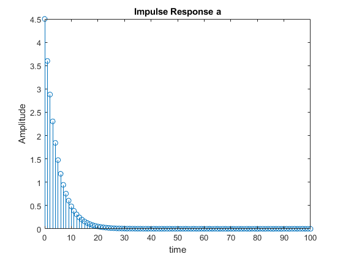
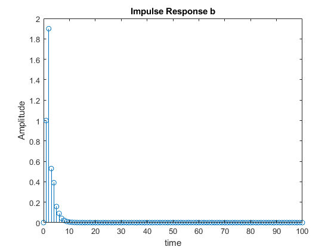
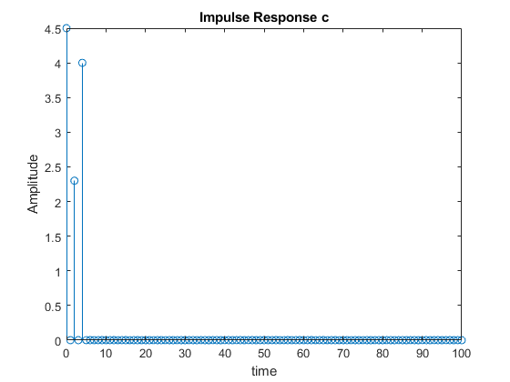
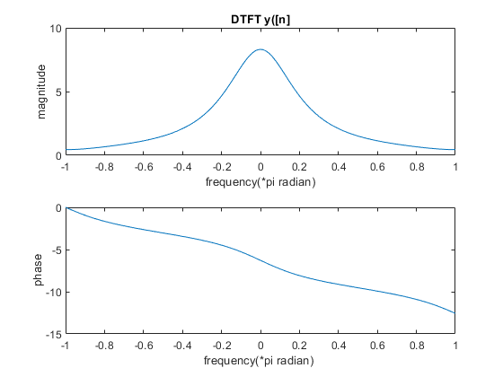
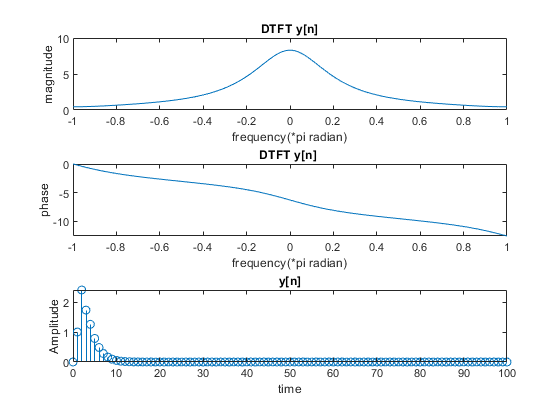
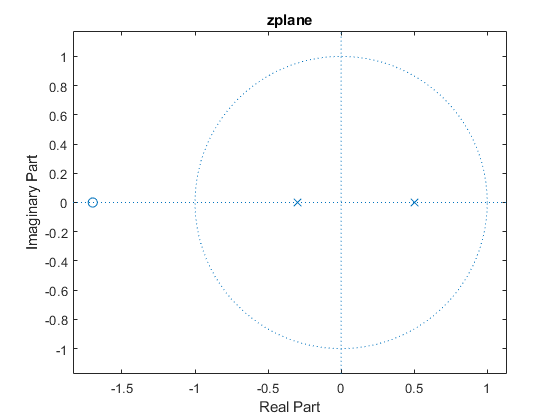

Contents
clear recent data
clear,clc,close all
IMPULSE RESPONSE part a)
b1=[4.5];
a1=[1 ,-0.8];
n=0:100;
h1 = impz(b1,a1,n);
figure()
stem(n,h1)
title('Impulse Response a');
xlabel('time');
ylabel("Amplitude")

IMPULSE RESPONSE part b)
b2=[0, 1,1.7];
a2=[1,-0.2,-0.15];
h2 = impz(b2,a2,n);
figure()
stem(n,h2)
title('Impulse Response b');
xlabel('time');
ylabel("Amplitude")

IMPULSE RESPONSE part c)
b3=[4.5,0,2.3,0,4];
a3=1;
h3 = impz(b3,a3,n);
figure()
stem(n,h3)
title('Impulse Response c');
xlabel('time');
ylabel("Amplitude")

phase and magnitude using filter command
n=0:100;
x= ((1/2).^n);
y1 = filter(b2,a2,x);
[ha1 ,wa1]=freqz(y1,1,-pi:pi/100:pi);
figure()
subplot(2,1,1)
plot(wa1/pi,abs(ha1))
title('DTFT y[n]')
ylabel('magnitude')
xlabel('frequency(*pi radian)')
subplot(2,1,2)
plot(wa1/pi,phase(ha1))
ylabel('phase')
xlabel('frequency(*pi radian)')
phase and magnitude using convolution
y2=conv(h2,x);
[ha2 ,wa2]=freqz(y2,1,-pi:pi/100:pi);
figure()
subplot(2,1,1)
plot(wa2/pi,abs(ha2))
title('DTFT y([n]')
ylabel('magnitude')
xlabel('frequency(*pi radian)')
subplot(2,1,2)
plot(wa2/pi,phase(ha2))
ylabel('phase')
xlabel('frequency(*pi radian) ')

DTFT and inverse z-transform
[h2_z,w2]=freqz(h2,1,-pi:pi/100:pi);
[x_z,wx]=freqz(x,1,-pi:pi/100:pi);
y_z=h2_z.*x_z;
figure()
subplot(3,1,1)
plot(w2/pi,abs(y_z))
title('DTFT y[n]')
ylabel('magnitude')
xlabel('frequency(*pi radian)')
subplot(3,1,2)
plot(w2/pi,phase(y_z))
title('DTFT y[n] ')
ylabel('phase')
xlabel('frequency(*pi radian)')
syms z
h2z=(z+1.7)/((z^2)-(0.2*z)-0.15);
xz=z/(z-(1/2));
yz=h2z.*xz;
y=iztrans(yz);
k=0:100;
yn=subs(y,k);
subplot(3,1,3)
stem(k,yn)
title('y[n]')
xlabel('time')
ylabel('Amplitude')

plot poles and zeros
figure()
zplane(b2 ,a2)
title('zplane')
